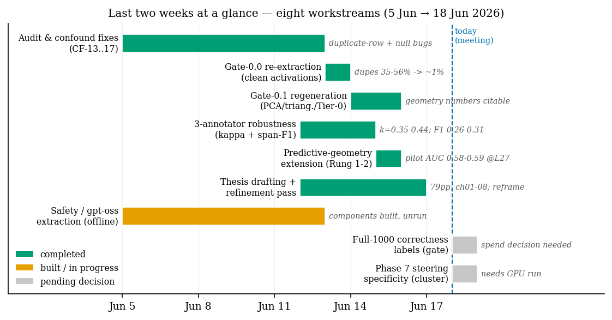
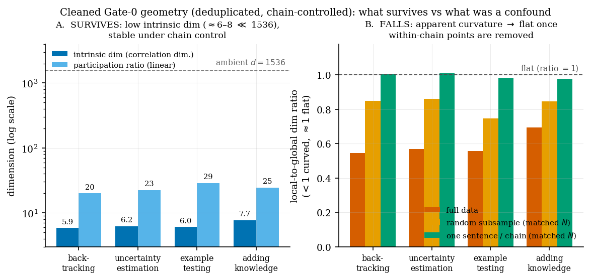
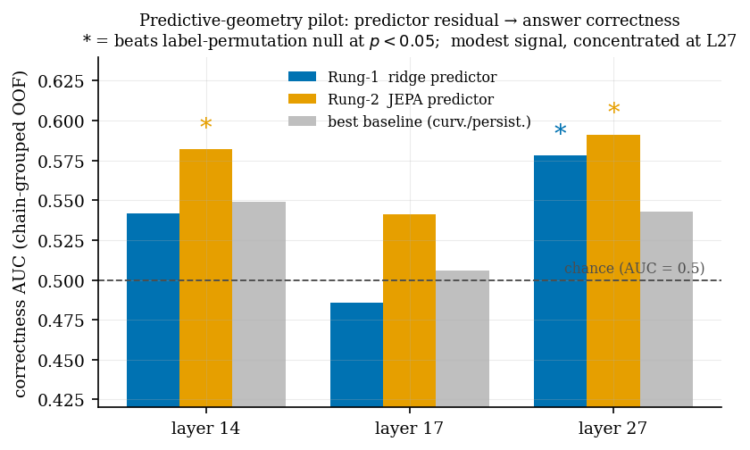

Date: 18 June 2026 · Period covered: ~5 → 18 June 2026 (last 2 weeks, "last week" flagged) · Project: The Geometry of Reasoning
The last two weeks were a "make the geometry trustworthy, then build on it" fortnight. Three things happened:
What I most need from you: two spend/compute decisions (scale the correctness labels; run the causal steering experiment) and a framing sign-off on leading with the curvature negative. See Decisions needed.
Since this brief was first drafted, the geometry chapter went from embargoed placeholders to a finished results chapter with real numbers and four figures, and two results hardened the headline:

| # | Workstream | Status | Headline outcome |
|---|---|---|---|
| 1 | Audit & confound remediation (CF-13…17) | ✅ Done | Duplicate-row + null-test bugs fixed; test suite green |
| 2 | Gate-0.0 re-extraction (clean activations) | ✅ Done | Duplicate fraction 35–56% → ~1%; verified clean |
| 3 | Gate-0.1 regen (PCA / 05c probes / triangulation / 05d / 05b / power) | ✅ Done | Citable & lifted into ch07: low-dim survives, curvature falls (well-powered), probes flat, no sub-types |
| 4 | 3-annotator robustness (κ + span-F1) | ✅ Done | κ = 0.35–0.44 (fair–moderate); span-F1 0.26–0.31 |
| 4b | R2.2 geometry replication under each annotator | 🟧 Running | Multi-annotator pipeline on cluster (Qwen3 done; Nova-Pro in progress) |
| 5 | Predictive-geometry extension (Rung 1–2) | ✅ Pilot done | Residual→correctness AUC 0.58–0.59 @ L27 (sig.) |
| 6 | Thesis: reframe + ch07 numeral-lift + ch02 expansion | ✅ Done | 89 pp; ch07 numbers+figures in; ch02 conceptual expansion |
| 7 | Safety / gpt-oss extraction extension | 🟧 Built, unrun | Components offline-tested; needs GPU + a scope call |
| 8 | Full-1000 labels & Phase-7 steering | ⬜ Pending | Need your decision (spend / compute) |
Before this fortnight, all geometry numbers were quarantined pending a known list of confounds. I worked through them and fixed them in code (commits 47a168d, 2d4ec11, 542b321, 5e37e46):
row_index.json sidecar written at extraction time with a hard-fail guard.Takeaway for the meeting: the reason the geometry story shifted is not fragility — it's that the pre-fix numbers were measuring a duplicate/autocorrelation artefact, and the clean numbers tell a sharper, more defensible story. This is the honest-by-design posture the whole thesis rests on.
Re-extracted all activations on the cluster (verified clean: duplicate fraction 0.76–1.28%, all 28 layers × 4 behaviours, sidecars consistent) and re-ran the pipeline. The Tier-0 robustness analysis (correlation-dimension as the stable estimator; "random subsample" vs "one-sentence-per-chain" at matched N isolates the chain effect) gives three clean findings:

① Low intrinsic dimension is REAL and robust (survives). Correlation dimension ≈ 5.9 / 6.2 / 7.7 / 6.0 (backtracking / uncertainty / adding-knowledge / example-testing) in a 1536-dim ambient space, and it barely moves across full data, random subsample, and chain-stratified controls (sd ≈ 0.1). → The "reasoning behaviours live on low-dimensional subspaces" claim holds. Rung 2 (subspace) survives.
② Per-behaviour curvature does NOT survive the chain control (clean negative). The local-to-global dimension ratio looks "curved" on full data (0.55–0.69, where <1 = curved) but goes to ≈ 1.0 (flat) once you take one sentence per chain at matched N. The apparent curvature was within-chain autocorrelation (consecutive sentences cluster locally), not a per-behaviour geometric property. → Rung 3 (per-behaviour curvature) is effectively falsified. The positive reframe: curvature is a trajectory-level phenomenon, not a static per-behaviour one — which is exactly where the new predictive-geometry extension (A4) and the concurrent literature (Zhou et al. 2510.09782) point.
③ Behaviour-specificity is mixed — and I think we should say so plainly. The variance-ratio null (chain-stratified permutation, high-res B = 2500) asks whether each behaviour's low-dim structure is more than its host chains' structure:
| Behaviour | L11 | L14 | L17 | L20 | L27 | Verdict |
|---|---|---|---|---|---|---|
| backtracking | <.001 | <.001 | <.001 | <.001 | <.001 | ✅ specific at all layers |
| uncertainty-estimation | <.001 | <.001 | <.001 | <.001 | <.001 | ✅ specific at all layers |
| example-testing | 0.61 | 0.75 | 0.019 | 0.019 | <.001 | 🟧 emerges at deep layers only |
| adding-knowledge | 1.00 | 1.00 | 1.00 | 1.00 | 1.00 | ❌ not behaviour-specific |
→ Two behaviours are cleanly behaviour-specific everywhere, one emerges late, one fails. adding-knowledge is also the rarest (lowest N) and highest-dimensional — consistent with it being the least-structured. This is a more honest and more interesting claim than a blanket "all behaviours are special."
Supporting outputs: results/robustness/R1-1.5B/geometry_robustness_summary.md, results/geometric/R1-1.5B/summary_layer14.md, results/triangulation/R1-1.5B/{summary.md,layer_sweep_curves.png}, results/cross_layer/R1-1.5B/{summary.md,subspace_angles_heatmap.png}.
To check the corpus isn't an artefact of one labeller, I compared three annotators (Sonnet-4.5, Qwen3-235B, Nova-Pro) on the same 1000 chains:
span_f1.py): 0.21 exact-boundary → 0.26–0.31 at IoU ≥ 0.5 → 0.37–0.41 any-overlap. The exact→overlap gap shows boundary jitter is real but only partly explains the disagreement.Outputs: results/robustness/cross_annotator_comparison.md, results/robustness/span_f1.md.
A new extension that bridges the thesis to JEPA / world-models. Idea: train a next-step predictor f over chain-of-thought step embeddings and study the residual r_t = x_{t+1} − f(x_≤t) — does how predictable a chain's reasoning is tell us whether the answer is correct?
Pilot setup: LLM-judged correctness labels on 200 chains → 183 usable (84 correct / 99 incorrect); predictor trained label-agnostically on all 986 chains (chain-grouped out-of-fold), correctness AUC evaluated on the labelled subset.

Findings: - The predictor works (label-free): it beats persistence at every layer (displacement R² ≈ 0.25–0.31), so step-to-step reasoning is partially predictable in latent space and generalises across chains. - Residual geometry carries a correctness signal — modest but significant: AUC 0.578 (p = 0.034) ridge and 0.591 (p = 0.024) JEPA at L27; 0.582 (p = 0.026) JEPA at L14. Beats curvature/persistence/length baselines and survives a label-permutation null. L17 is a dead spot. - Order doesn't matter (step-shuffle null never rejects, p > 0.7) → the signal is in predictability magnitude, not trajectory order. → Supports H1 (magnitude), not H3 (branch/order geometry). Matches the PHi paper (2503.13431). - Nonlinearity buys little: the JEPA edge over ridge is small and doesn't scale (60-epoch run overfits). The signal is largely linear-accessible.
Integrity note I'll raise myself: my first gate trained the predictor on the labelled subset only and reported an inflated AUC ≈ 0.61 (p < 0.01). That was a small-sample artefact; the honest train-on-all-chains design gives 0.54–0.59. I caught it, corrected it, and kept the flawed run for comparison. Report the corrected numbers.
Outputs: results/predict/R1-1.5B/corrected/{SUMMARY.md, gate_pilot.md, compare_rung2.md}, sweep at results/predict/R1-1.5B/residual_geometry_sweep.md. Code: src/predict/, tests 8/8 green.
The deliberative-alignment / "shape of safety reasoning" extension (refusal-direction engine, multi-annotator DSR pass, forgery-dataset builder, de-confounded fingerprint) is implemented and offline-tested on branch safety/gpt-oss-extraction (suite green). It is unrun — it needs gpt-oss-20b on the cluster and, more importantly, a scope decision (it's the thesis's "Movement II" flagship but it's a second, large arm). Flagged here so it's on your radar, not because it's blocking.
Lives in its own private repo now (reasoning-on-a-manifold-thesis), separate from the public code. Compiles cleanly with tectonic at 89 pages, zero undefined refs/cites.
| Part | Chapters | Status | Words |
|---|---|---|---|
| Foundations | ch01 intro, ch02 reasoning, ch03 background | ✅ drafted | ~15k |
| Structure | ch04 corpus, ch05 apparatus, ch06 standing results | ✅ drafted | ~13k |
| Structure | ch07 geometry results, ch08 steering | 🟧 ch07 drafted (numbers + 4 figures); ch08 stub | ~4k |
| Origin (safety) | ch09 programme, ch10 results | 🟧 ch09 drafted, ch10 embargoed stub | ~4k |
| Synthesis | ch11 conclusions | ⬜ stub | — |
bf4a68b): ch05–07 reconciled to "subspace supported, per-behaviour curvature rejected (chain artefact)." The now-final Gate-0.1 numerals have since been lifted into ch07 with four figures; the remaining embargoed numbers (steering / Phase-7, Movement-II) stay behind the \gateZero{} / \phaseSeven{} macros.thesis/_planning/STYLE.md): no geometry number appears outside a \gateZero marker.A four-agent pass (lit comparison + scooping scan + draft diagnostic + narrative planning) produced IMPROVEMENT_PROPOSAL_2026-06-15.md. Key outcomes:
Draft section + related-work survey already written: writeup/predictive_geometry.tex (13k), writeup/predictive_geometry_related_work.md (22k). Novelty wedge is narrowed and honest: the "first to use predictor residual for correctness" claim is retired (PHi got there for per-token scalars); our wedge is the predictor over behaviour-segmented steps + residual geometry + chain-grouped nulls.
adding-knowledge simply isn't behaviour-specific in this metric.| # | Decision | Cost / implication | My lean |
|---|---|---|---|
| 1 | Scale correctness labels 183 → ~1000 to tighten the predictive-geometry AUC and map the layer profile? | ~5× the pilot API spend | Yes — the L27 signal is real but noisy at n=183 |
| 2 | Run Phase-7 steering on the cluster (the causal specificity headline for Movement I)? | GPU time; pre-spend debt already fixed | Yes — it's the missing causal leg |
| 3 | Predictive geometry: chapter, side-paper, or paragraph? | Detour vs finishing the core | Lean side-paper / Part-II insert if label-scaling holds |
| 4 | Sign off on the curvature reframe (lead with low-dim + steering; curvature = trajectory-level future work)? | Framing of Movement I | Yes |
| 5 | gpt-oss safety arm — green-light now or after the core closes? | A second large empirical arm | Lean after core |
| 6 | ch02 knowledge-creation: keep substantial, or compress ~60%? | Thesis length / focus | Your call — it's a locked decision I can revisit |
Immediately (no new compute): - Finish R2.2: replicate the manifold (cdim/curvature) under each of the 3 annotators' labels — closes the annotator-robustness loop. - Lift the now-citable Gate-0 numerals into ch07 (currently embargoed placeholders).
Pending decision #1 (label spend): - Re-run the predictive-geometry gate at full ~1000 labels; pin the ridge-vs-JEPA gap and layer profile.
Pending decision #2 (cluster GPU): - Phase-7 steering (subspace vs single vs random control) → the causal Movement-I result → drafts ch08.
Write-up: - Apply the remaining refinement-proposal items (maturity-ledger table; methodology citations; flat-generic→curved-safety bridge). - Decide predictive-geometry placement (#3) and draft accordingly.
Headline numbers (all on clean, regenerated data): - Intrinsic dim (corr-dim): 5.9 / 6.2 / 7.7 / 6.0 in 1536-dim; stable across chain controls (sd ≈ 0.1). - Curvature local/global ratio: 0.55–0.69 (full) → ≈1.0 (one-per-chain) = chain artefact. - Behaviour-specificity (variance-ratio null, B=2500): 2/4 specific at all layers, 1 deep-only, 1 not. - Predictive geometry: L27 AUC 0.578 (ridge, p=.034) / 0.591 (JEPA, p=.024); L14 JEPA 0.582 (p=.026). - Annotator κ 0.35–0.44; span-F1 (IoU≥0.5) 0.26–0.31. - Duplicate fraction: 35–56% (pre-fix) → ~1% (clean).
Where things live:
- Cleaned geometry: results/{robustness,geometric,triangulation,cross_layer,pca,power_analysis}/
- Predictive geometry: results/predict/R1-1.5B/corrected/ · code src/predict/
- Annotator robustness: results/robustness/{cross_annotator_comparison,span_f1}.md
- Confound register (source of truth): CONFOUNDS_AND_REMEDIATION.md
- Thesis: private repo thesis/ (build: cd thesis && tectonic main.tex)
- Predictive-geometry write-up: writeup/predictive_geometry*.{tex,md}
- Figures in this brief: make_meeting_figures.py (reproducible from result JSON)
This brief: results/supervisor_meeting/MEETING_2026-06-18.md. Figures generated 2026-06-18 from the regenerated Gate-0.1 / Tier-0 outputs and the predictive-geometry pilot.